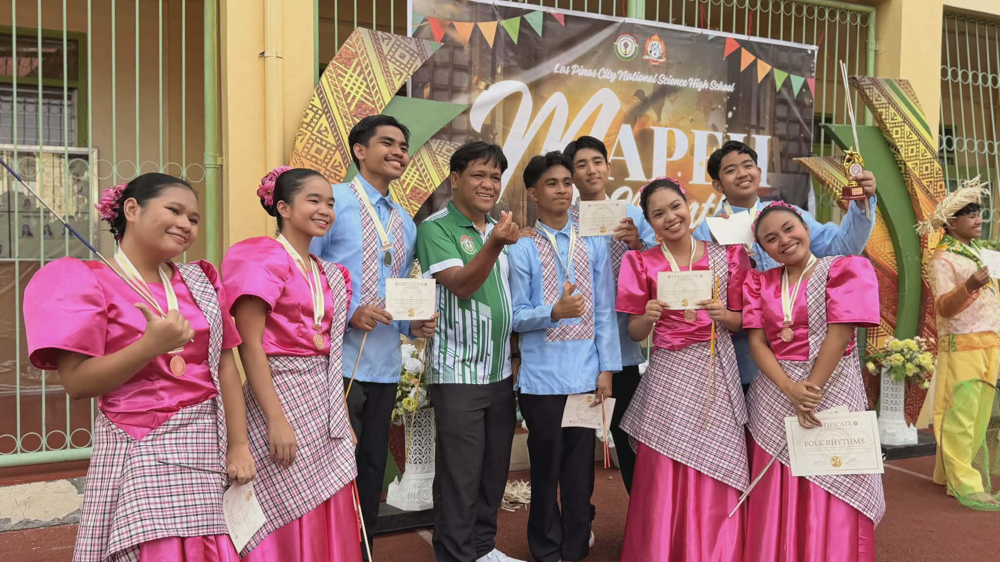
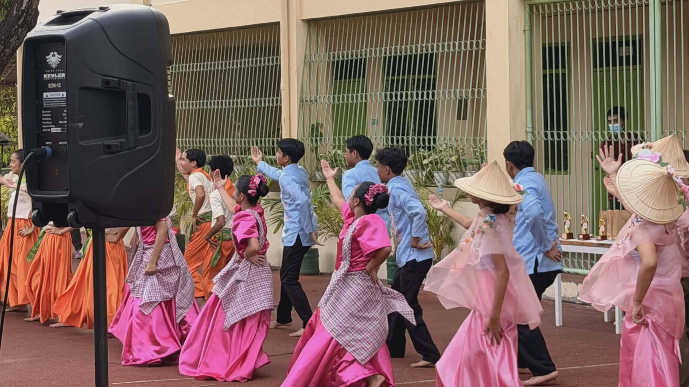

Reflection on Folk Dance!
What is the most important thing I learned from the event?
The most important thing I learned from the Folk Dance Competition was the dedication and discipline required to perform traditional dances. Even though the dancers looked relaxed and joyful on stage, I realized that their performances required a lot of practice and effort. Observing their routines helped me understand how much coordination and teamwork is needed in folk dancing. It also made me appreciate the beauty of cultural dances even more.
How can I apply what I learned in real-life situations?
I can apply this lesson by learning to appreciate and respect cultural traditions. Folk dances represent the history and identity of a community, so it is important to value and preserve them. This experience also reminded me that success in any activity requires dedication and practice. These are qualities that can help me in academics, sports, and other responsibilities.
Did I actively participate in the event? How?
Yes, I participated in the event as one of the tabulators since I am a Dance Troupe officer. My responsibility was to help record and organize the scores during the competition. Even though I was not one of the dancers, I still played an important role in making sure the event ran smoothly. Being part of the event allowed me to observe and appreciate the performances closely.
If I were to teach this topic or subject to a classmate, how would I explain it?
If I were teaching this to a classmate, I would explain that folk dance is a traditional dance that reflects the culture and history of a country. These dances often tell stories about the people, traditions, and way of life of a community. Performing folk dances requires coordination, practice, and teamwork. It is also a way of preserving and celebrating cultural heritage.
Why is it important to have events like this?
Events like the Folk Dance Competition are important because they help students learn about and appreciate their cultural heritage. They give students the opportunity to showcase traditional dances and keep these traditions alive. These events also encourage teamwork and discipline among performers. Most importantly, they help students develop pride in their culture.

